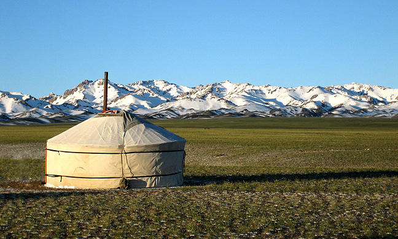

Generales
Edificaciones
Gastronomía

Caracteristicas Generales
Los kazajos son un grupo étnico de origen turco-mongol.
La mayoría de los kazajos son musulmanes suníes, aunque también existen minorías cristianas y animistas.
Los kazajos son conocidos por su tradición nómada y la cría de ganado, especialmente de caballos, ovejas y camellos.
Los kazajos también son famosos por sus habilidades en la caza con águilas.
Cultura y Religión
La cultura kazaja es una mezcla de influencias turcas, mongolas y persas.
Los kazajos tienen una cultura rica en música, danza y poesía.
El baile nacional kazajo es el "kara zhorga", que se realiza en parejas.
La religión predominante en Kazajstán es el Islam, pero los kazajos practican una versión única del Islam, que incluye elementos de la cultura animista y la tradición nómada.
Edificaciones
Las viviendas tradicionales de los kazajos son las yurtas, que son estructuras portátiles hechas de madera y fieltro.
También se pueden encontrar edificios de estilo turco y persa en las ciudades kazajas.
Gastronomíaa
La gastronomía kazaja es muy rica en carnes, especialmente cordero, carne de caballo y carne de vacuno.
Uno de los platos nacionales de Kazajstán es el "beshbarmak", un plato de carne cocida en caldo y servido con fideos y cebolla.
Otros platos populares incluyen el "kazy", una salchicha hecha de carne de caballo y el "shashlik",brochetas de carne a la parrilla.
Los lácteos también son importantes en la dieta kazaja, y el "kumis", una bebida alcohólica hecha de leche de yegua fermentada, es una bebida tradicional.